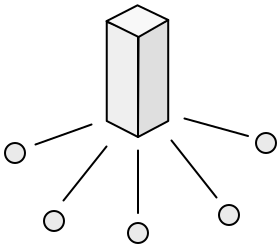
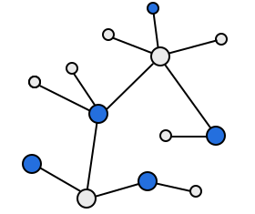

Social Media 2.0 is about privacy. Peer-to-peer architectures are replacing client/server architectures.

World Wide Web (WWW)
Social media based on the client/server architecture of the world wide web
provides persistent data. Whenever posts are added to an archive or read
from it, the data is always available, but the archive isn't owned by those who
read and write the messages. It belongs to the owners of the server and they
mine the data for information about their users. Wherever the central server
is located, it will be halfway around the world for some user who is only
sending a message to the other side of town. Problem are compounded if
servers are based in a country with pervasive surveillance or even if messages
only pass through such countries.

Peer to Peer (P2P)
Peer-to-peer architectures, where everyone owns their own data and uses
their own applications are close to the original conception of the world
wide web. It was initially assumed that everyone who used a web browser
would also run a web server. Instead, an electronic consumer society using
web browsers to access an industry of web services has emerged.
Peer-to-peer networks are overlaid on the internet so that peers can
communicate with each other directly. The problem is data persistence.
Unlike modern web servers, which are always on, consumer devices generally
connect to the internet intermittently and data bandwidth is often metered.
One solution is to use the peer to peer network itself as a distributed file
system or a distributed database. Another solution is to use a hybrid
architecture incorporating features of both client/server and peer-to-peer
networks. A more radical solution is to dispense with data persistence.
Rather than attempt a comrehensive survey, I offer a representative
sample of peer-to-peer networks. Both Beaker, which is based on the global
Dat file system, and Patchwork, which is based on the global Scuttlebutt
database, are part of large dynamic ecosystems that are evolving rapidly.
Although only Tox currently runs on mobile devices as well as desktop
computers, Andre Stalz is nearing completion of the mmmmm-mobile client
for Scuttlebutt and Sarah Jamie Lewis will soon release Cwtch-IM, a mobile
group chat app based on Ricochet.